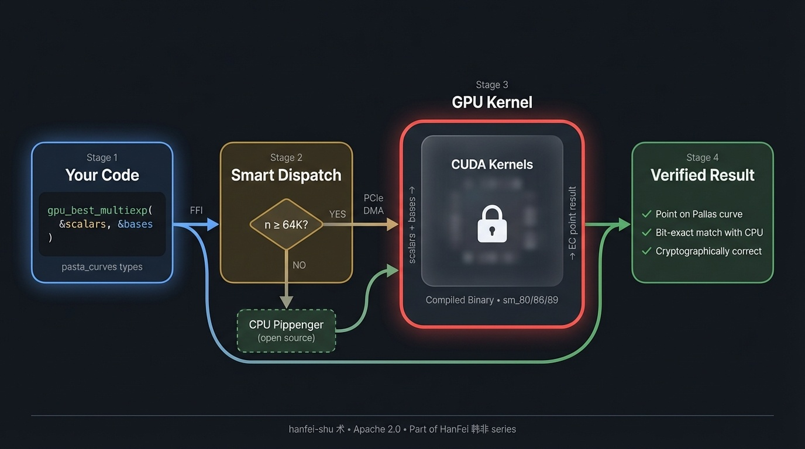

Making zero-knowledge proofs run on GPUs.
"法不阿贵，绳不挠曲" — The plumb line does not bend for the crooked. — 韩非子

If you're building on Halo2 zero-knowledge proofs — for AI verification, blockchain privacy, or anything with the Pallas curve — there's one operation eating most of your proving time: multi-scalar multiplication (MSM).
MSM is a giant dot product on elliptic curve points. It takes 60-70% of proof generation time. On CPU, half a million points takes ~300ms. That adds up.
hanfei-shu moves this to your NVIDIA GPU. Same math, same results, just faster.
RTX 3090 vs CPU Pippenger (single-threaded):
| Points | CPU | GPU | Speedup |
|---|---|---|---|
| 64K | 538ms | 115ms | 4.7x |
| 128K | 1008ms | 205ms | 4.9x |
| 256K | 1806ms | 398ms | 4.5x |
Every result is bit-exact — the GPU produces the same answer as the CPU.
| Library | BN254 | BLS12-381 | Pallas |
|---|---|---|---|
| ICICLE | Yes | Yes | No |
| cuZK | Yes | No | No |
| Blitzar | Yes | Yes | No |
| hanfei-shu | — | — | Yes |
# Cargo.toml
[dependencies]
hanfei-shu = { git = "https://github.com/GeoffreyWang1117/hanfei-shu" }use hanfei_shu::{gpu_best_multiexp, is_gpu_available};
use hanfei_shu::cpu::pippenger_msm; // CPU reference
let gpu = gpu_best_multiexp(&scalars, &bases);
let cpu = pippenger_msm(&scalars, &bases);
assert_eq!(gpu, cpu); // bit-exactThe CUDA kernels are prebuilt compiled libraries, not source code. Same model as NVIDIA's cuBLAS or Intel's MKL.
Why: You don't need CUDA Toolkit installed. cargo add hanfei-shu and it works.
The Rust code is fully open — including a complete CPU Pippenger implementation so you can verify every GPU result yourself.
| Crate | Concept | What |
|---|---|---|
| hanfei-shu 术 | Technique | GPU MSM engine (this crate) |
| hanfei-shi 势 | Power | Full GPU proving pipeline (planned) |
| hanfei-fa 法 | Law | ZK proof framework (planned) |
Extracted from ChainProve, a system for verifiable transformer inference with zero-knowledge proofs.